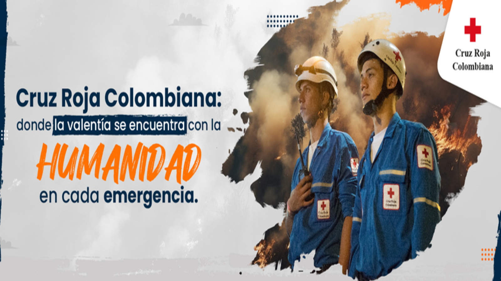
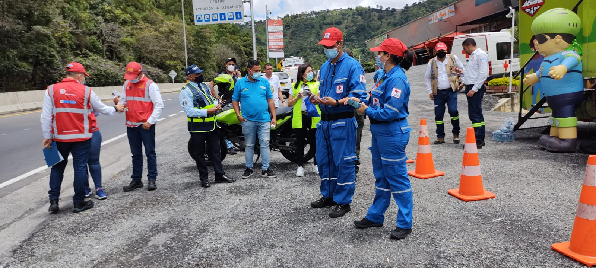

Comprometidos con la salud, el bienestar y la protección de la comunidad caldense
Cruz Roja Colombiana Seccional Caldas es una organización humanitaria que se dedica a brindar asistencia en situaciones de emergencia, prestar servicios de salud y promover la protección de los derechos humanos en el departamento de Caldas. Nos enfocamos en salvar vidas y reducir el sufrimiento de las comunidades más vulnerables.
Atención en emergencias, cursos de primeros auxilios, recolección de sangre y programas de prevención son solo algunas de las áreas en las que Cruz Roja Colombiana Seccional Caldas trabaja activamente. También promovemos la educación y conciencia sobre el riesgo de desastres y la importancia de la solidaridad en tiempos de crisis.
Nos esforzamos por llegar a todos los rincones del departamento de Caldas, brindando apoyo a las comunidades más necesitadas, especialmente en momentos de crisis.
La Cruz Roja Colombiana Seccional Caldas prioriza la salud de las comunidades y es por esto que en este apartado quiere darte la posibilidad de detectar de manera oportuna la presencia de algunas patologias o enfermedades que puedas llegar a sufrir. Animate a detectar de manera oportuna un ACV - Accidente cerebro vascular
¿Tienes preguntas o deseas más información? Contáctanos a través de los siguientes medios. Estamos aquí para ayudarte y ofrecerte información sobre nuestros servicios y cómo puedes colaborar.